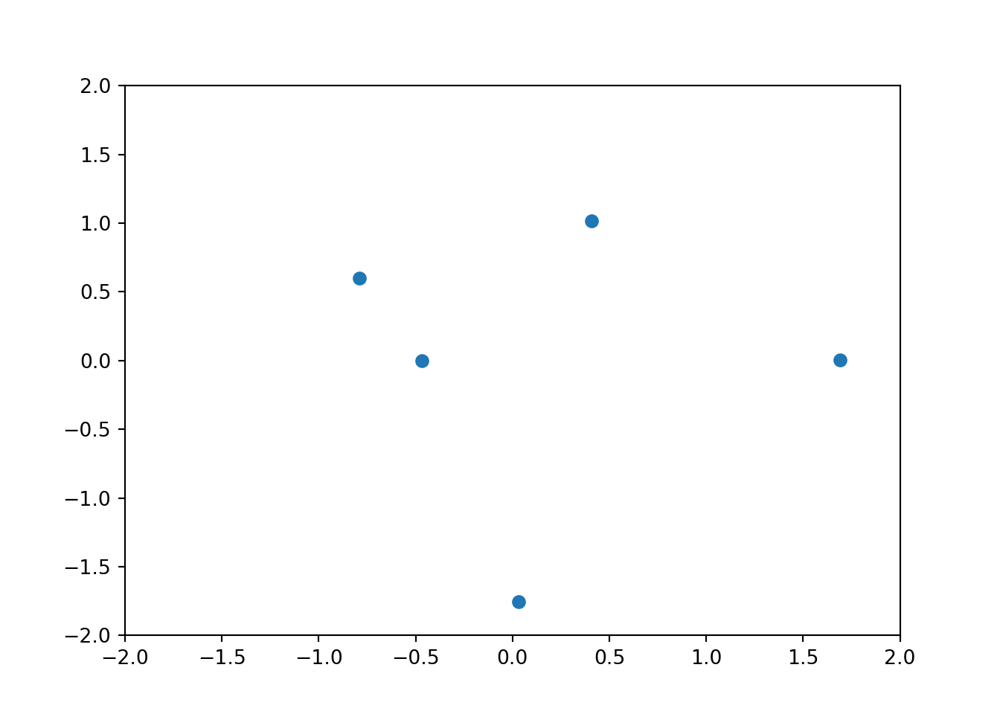
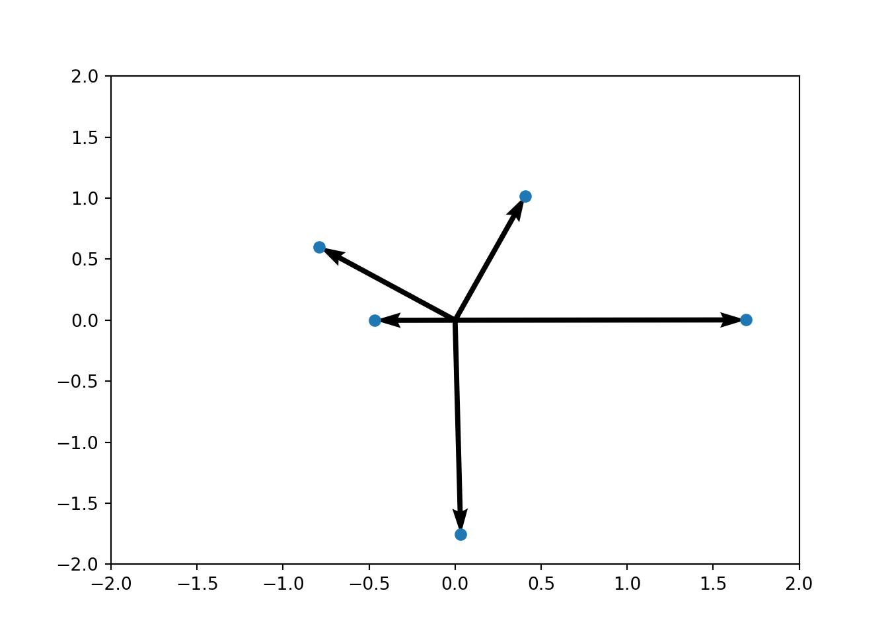

A Linear Algebra Review
For this brief linear algebra review, we’ll set up a Python workspace:
import numpy as np
from numpy.random import randn, rand, seed
import matplotlib.pyplot as plt
seed(7)A.1 Review of vectors and linear algebra
A.1.1 Vectors
- A vector is a container that holds multiple numbers
- It’s written as
\[x = \begin{pmatrix}x_1\\x_2\\ \vdots \\ x_d \end{pmatrix}\]
- For example, \(x = \begin{pmatrix}2\\-1 \\ 5.5 \end{pmatrix}\) is a 3-dimensional vector because it has 3 elements
- This is like the math equivalent of a list or array in R/Python, but the values will be numerical
- To say \(x\) is a \(d\)-dimensional vector, we can write \(x\in \mathbb{R}^d\).
- You can think of a vector as a point in \(d\)-dimensional space.
d = 5
x, y = randn(d),randn(d)
plt.scatter(x,y);
plt.xlim(-2,2);## (-2, 2)plt.ylim(-2,2);## (-2, 2)plt.show()
Each of these 5 points is a 2D vector. They are:
for i in range(d):
print("Vector number %d is (%.2f,%.2f)" % (i+1, x[i], y[i]))## Vector number 1 is (1.69,0.00)
## Vector number 2 is (-0.47,-0.00)
## Vector number 3 is (0.03,-1.75)
## Vector number 4 is (0.41,1.02)
## Vector number 5 is (-0.79,0.60)We can also draw them as arrows:
plt.quiver(0*x,0*y,x,y,angles='xy', scale_units='xy', scale=1);
plt.scatter(x,y);
plt.xlim(-2,2);## (-2, 2)plt.ylim(-2,2);## (-2, 2)plt.show()
A.1.2 Matrices
- A matrix is a 2D container that holds numbers
- Here is where the confusion starts… the word dimension has 2 meanings (not my fault!)
- We refer to the length of a vector as its dimension, because we think of it as a point in \(d\)-dimensional space
- But in terms of being a container holding numbers, it’s a 1-dimensional contained regardless of its length
- Make sure you understand this! (and see below)
x = randn(5)
x## array([-0.62542897, -0.17154826, 0.50529937, -0.26135642, -0.24274908])x[0]## -0.62542897396675967Above: we call this a 5-dimensional vector because it’s a point in 5-dimensional space
x.shape## (5,)But it’s also 1-dimensional
x.ndim## 1It would be less confusing to call it a “vector of length 5” rather than “a vector of dimension 5” but this is how the world is, and you need to be aware & able to handle it.
x = randn(3,3)
x## array([[-1.45324141, 0.55458031, 0.12388091],
## [ 0.27445992, -1.52652453, 1.65069969],
## [ 0.15433554, -0.38713994, 2.02907222]])x[2,1]## -0.38713994328638812x.shape## (3, 3)x.ndim## 2y = randn(2,3,4)
y[0,0,0]## -0.04538602986064609y.size## 24Matrices do not have to be “square”, e.g.
x = rand(3,5)
x## array([[ 0.41488598, 0.00142688, 0.09226235, 0.70939439, 0.5243456 ],
## [ 0.69616046, 0.95546832, 0.68291385, 0.05312869, 0.30885268],
## [ 0.59259469, 0.23512041, 0.964971 , 0.94504822, 0.84840088]])x.shape## (3, 5)x.ndim## 2We will only deal with 1D containers (vectors) and 2D containers (matrices). We don’t touch 3D (or higher) containers; FYI these are called tensors. However, we’ll deal with vectors and matrices of various sizes!
Assumed knowledge:
- Matrix/vector addition/subtraction
- Matrix/vector multiplication
- (ideally) Inverse of a matrix
- (ideally) Some geometric intuition about linear algebra
A.2 Random vectors
- In addition to a vector containing numbers, you can also have a vector containing random variables.
- This is called a random vector.
- I will probably slip and sometimes refer to it as a multidimensional random variable.
- According to Vincenzo (PhD in statistics), this isn’t formally right.
- In my life, it has served me fine.
- This is convenient for representing systems with many RVs, so we don’t need to write \(X,Y,Z,A,B,C,\ldots\)
- We can just write \(X\) as a \(d\)-dimensional vector, and its elements are the random variables